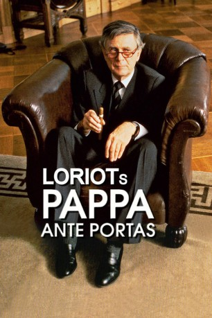
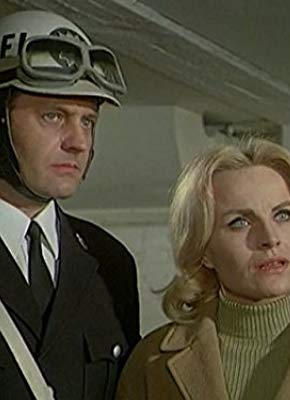

#1016 Loriots Pappa ante Portas
 
 IMDB-Wertung: 8.0 / 10
IMDB-Wertung: 8.0 / 10  Metascore: 0
Metascore: 0 
Der Einkaufsdirektor Heinrich Lohse wird überraschend in den Vorruhestand geschickt. Seiner Familie verkündet er die “freudige” Botschaft, dass er fortan seine Erfahrungen der Familie und dem Haushalt zugute kommen lassen will. Heinrich versucht sogleich die Lebensmitteleinkäufe der Familie möglichst kostengünstig zu gestalten. Seine Gattin Renate kann dem Rabattvorteil von zwei Paletten Senf für einen Dreipersonen-Haushalt jedoch nicht viel Positives abgewinnen. Weiteres Chaos lässt nicht lange auf sich warten und im Hause Lohse droht ein Rosenkrieg auszubrechen. Und dann naht auch noch der 80. Geburtstag der Schwiegermutter.
Jahr: 1991
Dauer: 89 Minuten
FSK: 0
Land: Deutschland Studio: Tobis FilmkunstTonspuren:
Untertitel:
Auflösung: 1080p (1920x1080) Größe: 8130 MB
Genre: Komödie
Regisseur: Vicco von Bülow, Renate Westphal-Lorenz
Drehbuch: Vicco von Bülow
Soundtrack: Rolf A. Wilhelm
Darsteller:
 Klaus Münster als In der Röhrenfirma: Lieferant
Klaus Münster als In der Röhrenfirma: Lieferant Ludger Pistor als Fernseh-Team: Regieassistent
Ludger Pistor als Fernseh-Team: Regieassistent- Evelyn Hamann als Renate Lohse
- Vicco von Bülow als Heinrich Lohse / Opa Hoppenstedt / Dichter Frohwein / Geigenspieler
 Irm Hermann als Hedwig
Irm Hermann als Hedwig- Hans-Peter Korff als Hellmuth
- Dagmar Biener als Brigitte Mielke
- Ortrud Beginnen als Gertrud Mielke
- H.H. Müller als Fabrikant Drögel
- Hans-Günter Martens als Kurt
- Inge Wolffberg als Frau Kleinert
- Gerrit Schmidt-Foß als Dieter Lohse
- Dagmar Altrichter als Gäste
- Katharina Brauren als Gäste
- Kurt Hübner als In der Röhrenfirma: Generaldirektor
- Brigitte Sanner als In der Röhrenfirma: Vorzimmerdame
- Christine Oberländer als In der Röhrenfirma: Sekretärin
- Dagmar Gruhl als Bekannte der Familie: Rita
- Monika Ogonek als Bekannte der Familie: Gerti
- Luise Lunow als Bekannte der Familie: Frau Bredenbek
- Ursula Reit als Bekannte der Familie: Frau Klapproth
- Gerd Dudenhöffer als Öffentliche Dienste: Ober
- Heinz Rennhack als Öffentliche Dienste: Barkeeper
- Erich Schwarz als Öffentliche Dienste: D-Zugkellner
- Udo Thomer als Öffentliche Dienste: Polizist
- Elisabeth Goebel als Öffentliche Dienste: Lebensmittelhändlerin
- Karl-Ulrich Meves als Öffentliche Dienste: Lebensmittelhändler
- Charlotte Asendorf als Öffentliche Dienste: Hausierer
- Nikolaus Schilling als Öffentliche Dienste: Hausierer
- Walter Jacob als Öffentliche Dienste: Pförtner
- Kurt Ackermann als Im Café: Gast
- Günther Gürsch als Im Café: Pianist
- Heinz Meier als Fernseh-Team: Regisseur
- Günther M. Stocklöv als Fernseh-Team: Aufnahmeleiter
- Antonia Lerch als Fernseh-Team: Scriptgirl
- Gerda Gmelin als Geburtstagsgesellschaft: Oma Jensen
- Alexander May als Geburtstagsgesellschaft: Bürgermeister
- Balduin Baas als Geburtstagsgesellschaft: Musiklehrer
- Klaus Jepsen als Geburtstagsgesellschaft: Dr. Pohlmann
-  Evelyn Meyka als Geburtstagsgesellschaft: Frau Pohlmann
- Ingrid von Bothmer als Geburtstagsgesellschaft: Alte Dame
- Heidemarie Schneider als Geburtstagsgesellschaft: Gemeindeschwester
- Bernd Raucamp als Geburtstagsgesellschaft: Pastor Hummel
- Eleonore Wittekind als Geburtstagsgesellschaft: Kichererbse
- Daniela Hoffmann als Geburtstagsgesellschaft: Servierhilfe
- Joseph Rothmann als Geburtstagsgesellschaft: Koch
Datei: X:\1991\Loriots Pappa ante Portas (1991, FSKo.Al., 1920x1080).mkv seit 07.05.2015
Festplatte: HD 1987-1991
 Es gibt insgesamt 53 Filme in der Gruppe '1991'
Es gibt insgesamt 53 Filme in der Gruppe '1991'